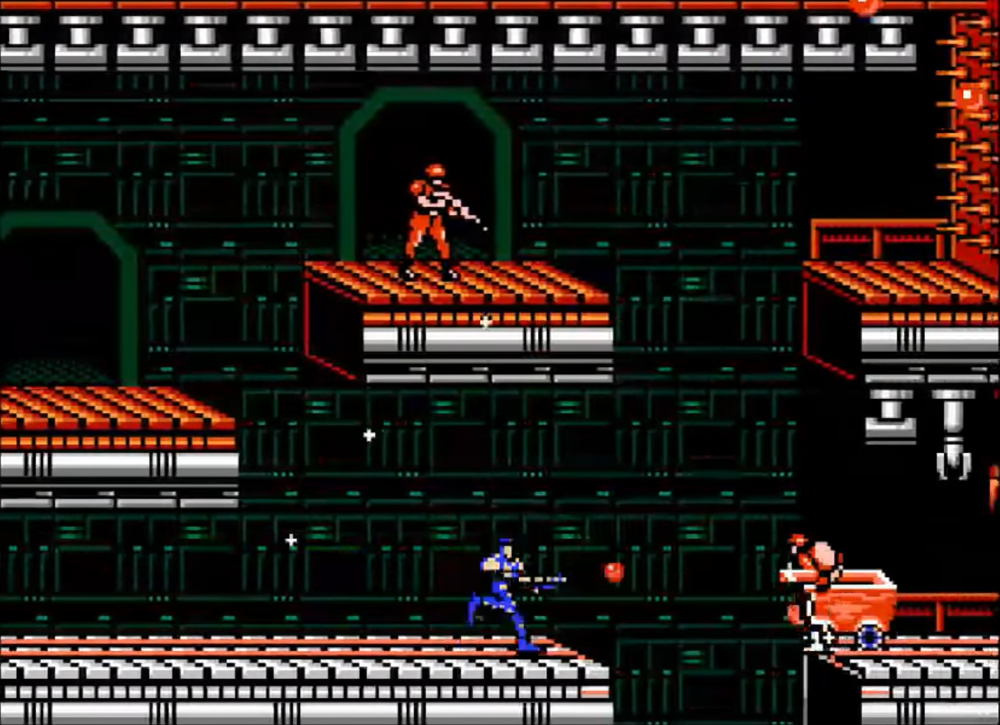
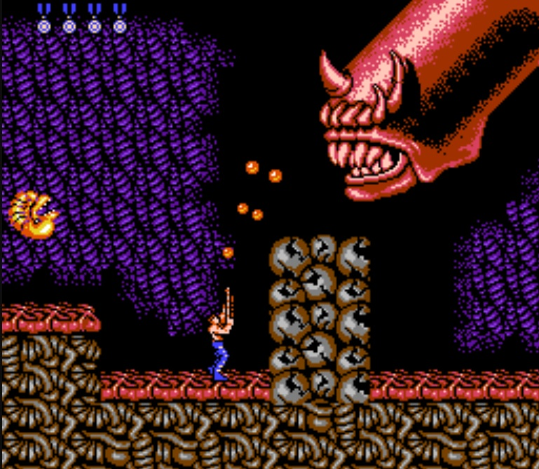

Details

Contra is a run-and-gun platformer that consists of eight separate stages, each of which represents one of the Red Falcon’s “lines of defence” and requires the defeat of a boss for completion. To reach this final point, the player must progress through the level, destroying both aliens and enemy defences while avoiding deadly projectiles and the bottom of the screen (usually represented by water or holes). Luckily, to aid them are three lives/medals (thirty if Konami code is used - see “Trivia” page), an infinitely-shooting gun, obtainable upgrades for said gun (shotgun, laser gun, flamethrower, etc.), and a friend (not included with the game ☺)!

Innovative Features

A substantial factor of Contra’s success was its variety of innovations, the most notable of which is its multiplayer mode, a very uncommon sight in 80’s video games. Additionally, its impressive graphics (for the time) including two stages with a 2.5D/pseudo-3D perspective, smooth controls, exceptional hit detection, and notorious difficulty also contributed greatly to its popularity.